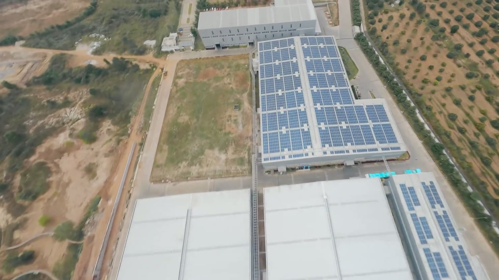
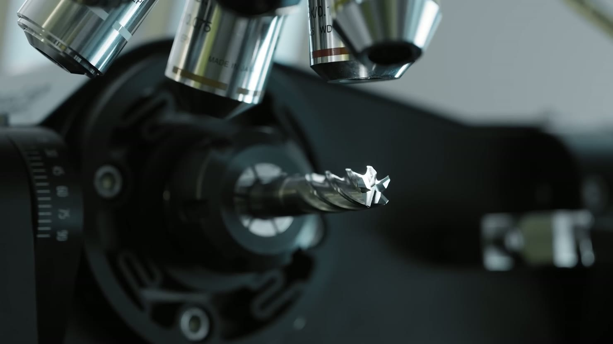
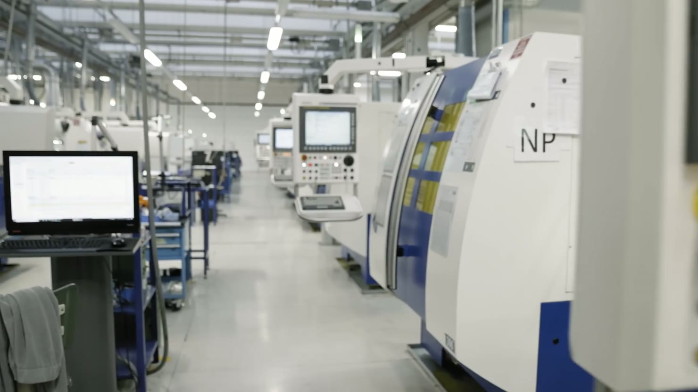

公司介绍
广州桦锐刀具有限公司
集硬质合金刀具研发、生产和销售于一体，专注硬质合金数控刀片的研发与应用。
公司坚持“致力于高端专业，铣钻刀片研发生产”的发展战略，产品涵盖车削、铣削和钻削。办公地点位于广州黄埔，在清远佛冈和东莞长安设有三处自有工厂。

四项自主核心技术
从基体材料到表面涂层，桦锐围绕刀片的材料、结构、成型与表面性能开展研发。
基体材料
硬质合金产品开发了模具铣刀片基体、铸铁基体和高硬基体，对应不同加工应用。
槽型结构
结合刀片的加工用途设计槽型，将切削需求落实到刀片的结构设计中。
精密成型
将基体与槽型设计转化为刀片形状，关注加工所需的形状与尺寸精度。
表面涂层
硬质合金基体搭配高红硬性、低摩擦系数的 PVD 涂层，兼顾加工精度、效率与刀具使用寿命。

车削、铣削与钻削
三大加工系列覆盖不同切削任务。产品材质包括硬质合金、PCD、单晶钻石和金属陶瓷。
- 车削
- 围绕车削应用开发相应的刀片。
- 铣削
- 面向铣削需求，开发模具铣刀片基体等产品。
- 钻削
- 钻削刀片与铣削刀片同属公司的重点研发方向。
办公与生产基地
公司在广州黄埔设有办公室，三处自有工厂分布于清远佛冈和东莞长安。
- 广州办公室
- 广州市黄埔区开泰大道182号10层04房之01
- 清远佛冈 · 万洋城西科技园工厂
- 广东省清远市佛冈县万洋城西科技园
- 清远佛冈 · 科创路工厂
- 广东省清远市佛冈县石角镇科创路3号12栋
- 东莞长安工厂
- 广东省东莞市长安镇上角新居路7号

品质理念
桦锐秉持客户至上、共同发展的理念，持续完善产品体系、革新技术并提升质量。公司把加工精度、效率和刀具使用寿命作为产品改进的重点，尤其重视车削和铣削刀片在实际加工中的表现。